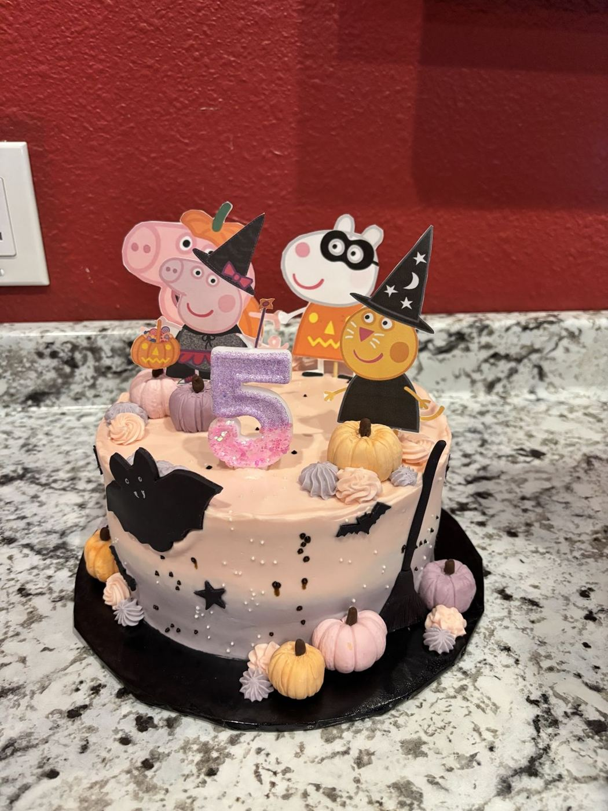

Hi, I’m Liz.
Baker and owner of The Sweet Cupfé.
The Sweet Cupfé is a quaint, welcoming bakery in Leander run by Liz, whose cakes regulars have been ordering for years. Besides custom cakes and gluten-free bakes, the shop hosts classes and community events, including collaborations with Next Chapter Bookstore.
